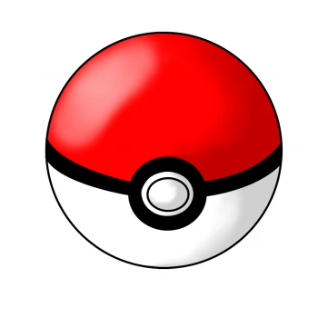

O que é Pokemon
Pokémon é uma série de jogos eletrônicos desenvolvidos pela Game Freak e publicados pela Nintendo como parte da franquia de mídia Pokémon. Lançado pela primeira vez em 1996 no Japão para o console Game Boy, a principal série de jogos de RPGs, que continuou em cada geração em portáteis da Nintendo.

As PokéBolas são itens fundamentais na jornada de um treinador, já que é através delas que se consegue capturar um Pokémon. Inicialmente, as Poké Bolas eram feitas das Bolotas de Carvalho (Apricorns), sendo que cada uma tinha uma propriedade especial, dependendo do fruto usado para fazê-la.